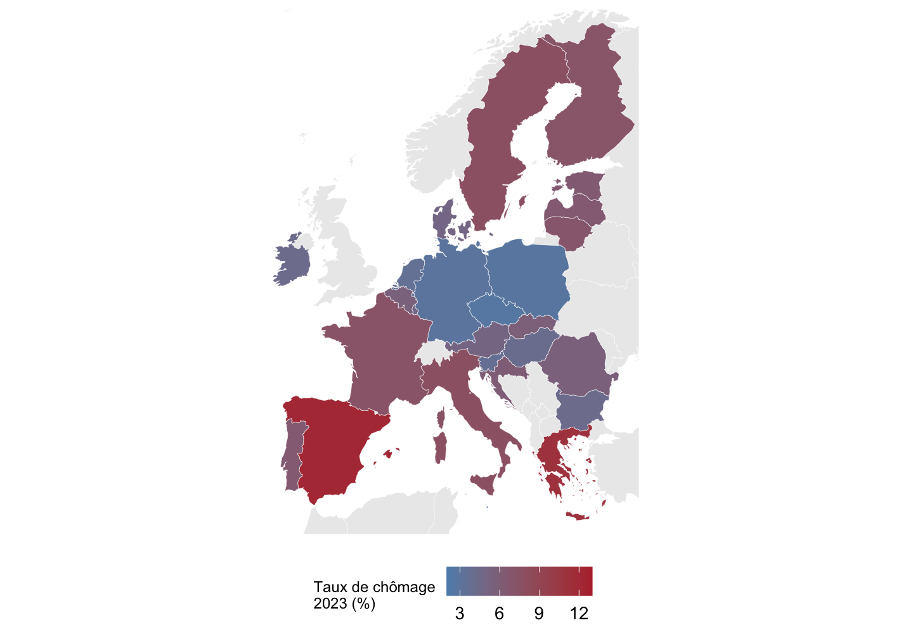
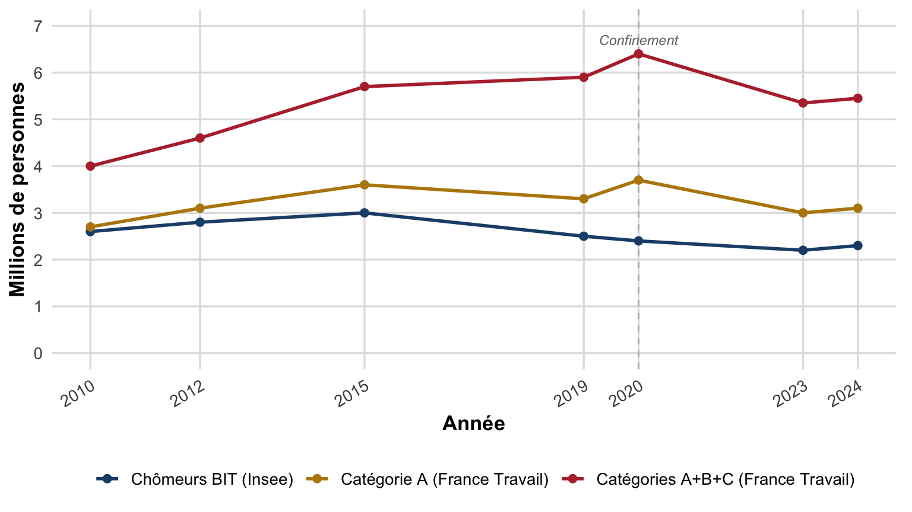
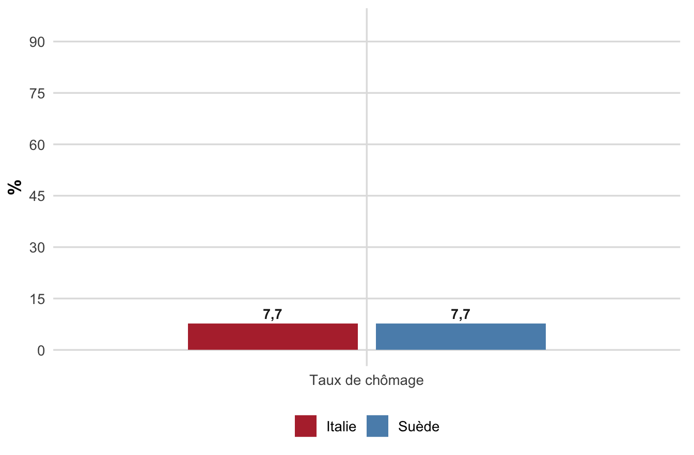
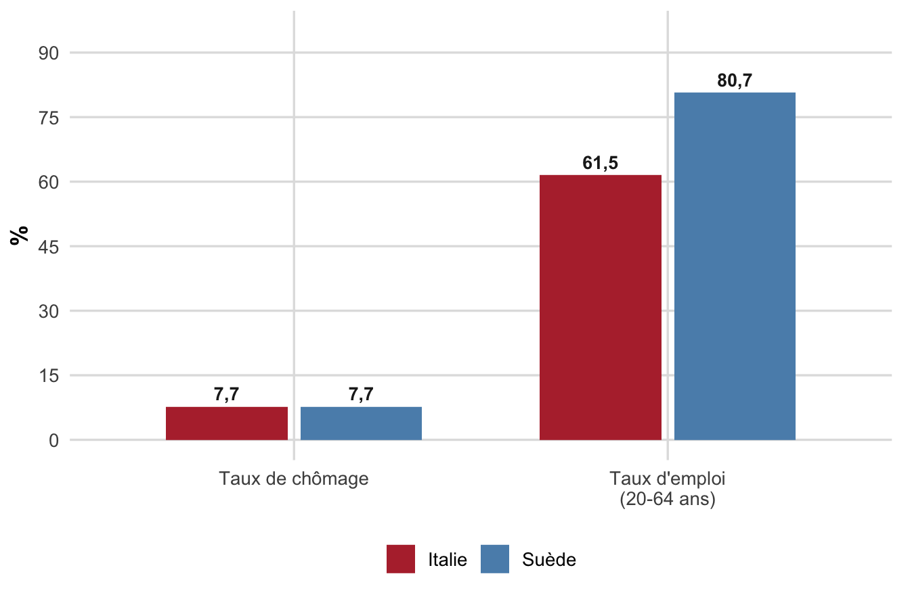

flowchart LR
A[Avant signature] --> SA[Selection adverse]
SA --> S[Signature du contrat]
S --> B[Apres signature]
B --> AM[Alea moral]
CM 3 : Marché du travail : définitions & mesures
Spécificités, modèles internationaux et mesures du chômage (Chapitre II, Partie 1 : § I-III)
Pierre Beaucoral
L2 AES : Semestre 1
Plan de la séance
- Un marché pas comme les autres : les spécificités du travail
- Trois modèles nationaux de régulation du marché du travail
- Mesurer l’offre de travail : population active, taux d’activité et d’emploi
- Deux mesures concurrentes du chômage : INSEE (BIT) vs France Travail
- Les limites du taux de chômage et le halo du chômage
Séance adossée au Chapitre II, Partie 1, sections I à III du résumé de cours.
Objectifs de la séance
À l’issue de cette séance, vous saurez :
- Expliquer pourquoi le marché du travail n’est pas un marché comme les autres.
- Distinguer les trois modèles nationaux de régulation (flexibilité, sécurité, flexisécurité).
- Calculer et interpréter la population active, le taux d’activité, le taux d’emploi et le taux de chômage.
- Distinguer la mesure du chômage par l’INSEE (critères du BIT) de celle de France Travail (catégories A à E).
- Expliquer pourquoi le taux de chômage seul peut être trompeur, et ce que recouvre le « halo du chômage ».
D’après les cours de C. Mathonnat (2018-2019) et M. Ouedraogo (2025-2026), CERDI, Université Clermont Auvergne.
Le marché du travail fait se rencontrer deux offres inversées
Marché du travail. Lieu théorique de confrontation entre la demande de travail (les entreprises, qui offrent des emplois) et l’offre de travail (les ménages, qui offrent leur force de travail en demandant un emploi).
Attention au vocabulaire, source de confusion fréquente :
- celui qui demande du travail (l’entreprise) offre de l’emploi ;
- celui qui offre du travail (l’individu) demande de l’emploi.
Le contrat de travail engage une personne, pas seulement une marchandise
Ce qui s’échange sur le marché du travail, ce sont des personnes, pas des marchandises comme les autres.
- Le contrat de travail engage la personne du salarié, sa subordination à un employeur et une partie de sa vie professionnelle, il n’est donc pas une simple variante du contrat commercial.
- Le marché du travail est en outre segmenté par compétences et par secteurs, plutôt qu’unique et homogène : il n’existe pas un marché du travail, mais des marchés du travail.
L’information circule mal entre employeur et salarié
Sélection adverse
Avant la signature du contrat : l’employeur ne connaît pas parfaitement les compétences et la motivation réelles des candidats.
Un salaire trop bas peut dissuader les meilleurs profils de postuler.
Aléa moral
Après la signature du contrat : l’employeur ne peut observer parfaitement l’effort du salarié, une fois celui-ci protégé par son contrat.
Un salarié en CDI peut être moins incité à fournir un effort maximal.
Ces deux asymétries d’information distinguent radicalement le marché du travail d’un marché de biens ordinaire.
Rien ne garantit un ajustement automatique vers le plein emploi
- Contrairement à un marché de biens standard, aucun mécanisme évident n’assure que l’offre de travail rencontre exactement la demande.
- Il n’existe pas de théorie unifiée du marché du travail, d’où la pluralité des cadres théoriques (néoclassique, keynésien, WS-PS, appariement) étudiés plus loin dans le chapitre.
Comprendre ce marché est un enjeu de première importance : la sous-utilisation de la main-d’œuvre est un gaspillage de potentiel productif, le chômage nourrit tensions sociales et pauvreté, et le travail reste la première source de revenu des ménages.
Les pays à faible chômage ne partagent pas le même modèle
Une comparaison internationale des taux de chômage fait apparaître des écarts durables entre pays :
- chômage structurellement faible : États-Unis, Japon, Allemagne, Royaume-Uni, pays nordiques ;
- chômage plus élevé : Europe du Sud (France, Espagne, Portugal, Italie, Grèce).
Ces pays à faible chômage ne partagent pourtant pas le même modèle institutionnel, d’où une typologie en trois modèles.
Des taux de chômage durablement différents selon les pays

Figure 1: Taux de chômage harmonisé, moyenne annuelle 2023 (% de la population active). Source : OCDE, Employment Outlook 2024 ; Eurostat, Labour Force Survey (taux de chômage harmonisé).
OCDE (Employment Outlook 2024) ; Eurostat (Labour Force Survey), moyennes annuelles 2023. Nuance à garder en tête : la Suède (7,7 %) et le Portugal (6,5 %) ne suivent pas exactement la partition Nord/Sud attendue, la réalité est plus continue que la typologie ne le suggère.
Le clivage Nord/Sud du chômage en Europe

Figure 2: Taux de chômage harmonisé par pays, Union européenne, moyenne annuelle 2023. Le gradient Nord/Sud est visible, mais pas parfaitement continu : l’Espagne (12,2 %) et la Grèce (11,1 %) se détachent nettement, tandis que le Portugal (6,5 %) se rapproche des niveaux d’Europe centrale. Source : Eurostat, Labour Force Survey (indicateur une_rt_a). Fond de carte : Natural Earth (rnaturalearth).
Le modèle « flexibilité » ne protège ni les emplois ni les travailleurs
Flexibilité (pays anglo-saxons). Faible protection de l’emploi, assurance chômage peu généreuse, faible accompagnement des chômeurs.
Ce modèle a permis de contenir le chômage, au prix d’une forte hausse des inégalités de revenus entre travailleurs qualifiés et peu qualifiés (emplois précaires et peu rémunérés) : c’est notamment le choix fait par le Royaume-Uni.
Le modèle « sécurité » protège à la fois les emplois et les travailleurs
Sécurité (Europe continentale, dont la France). Protection de l’emploi élevée, assurance chômage généreuse, accompagnement limité des chômeurs.
Ce modèle limite la hausse des inégalités de revenus, mais au prix d’un chômage de longue durée plus élevé pour les travailleurs peu qualifiés.
Le modèle « flexisécurité » protège les travailleurs, pas les emplois
Flexisécurité (pays nordiques, Danemark en particulier). Faible protection de l’emploi, mais assurance chômage généreuse et conditionnelle à la recherche active d’emploi, combinée à un accompagnement important des chômeurs.
Ce modèle cherche à combiner réallocation rapide de la main-d’œuvre et protection des personnes plutôt que des postes.
Pour aller plus loin
Le « triangle d’or » danois (flexibilité + sécurité sociale + politique active de l’emploi) sera détaillé au Chapitre III, consacré aux politiques de l’emploi.
Trois modèles, trois arbitrages différents
| Modèle | Protection | Chômage global | Inégalités | Chômage de longue durée |
|---|---|---|---|---|
| Flexibilité | ni emplois, ni travailleurs | contenu | élevées | faible |
| Sécurité | emplois et travailleurs | plus élevé | limitées | élevé (peu qualifiés) |
| Flexisécurité | travailleurs, pas les emplois | contenu | limitées | faible |
Typologie présentée en cours à partir de la comparaison internationale des taux de chômage.
L’arbre des trois modèles résume les arbitrages nationaux
flowchart TD
Q[Chomage structurellement faible] --> M1[Flexibilite]
Q --> M2[Securite]
Q --> M3[Flexisecurite]
M1 --> R1[Faible protection emploi et chomeurs]
M2 --> R2[Forte protection emploi et chomeurs]
M3 --> R3[Protection des travailleurs pas des emplois]
Synthèse des trois modèles présentés dans les diapositives précédentes.
La population active additionne emplois et chômeurs
Selon les critères de l’Organisation Internationale du Travail (OIT) :
\[ \text{Population active} = \text{Employés} + \text{Chômeurs} \]
La population active représente l’offre de travail sur le marché. Ses déterminants principaux : taux d’activité des femmes, structure par âge de la population, flux migratoires, durée des études, âge de départ à la retraite.
Les inactifs sont les personnes en âge de travailler qui ne sont ni en emploi, ni activement à la recherche d’un emploi : chômeurs découragés, personnes malades ou en situation de handicap, personnes au foyer, étudiants, retraités.
flowchart TD
A[Population en age de travailler] --> B[Population active]
A --> C[Inactifs]
B --> D[Emplois]
B --> E[Chomeurs]
Trois taux résument l’état du marché du travail
Taux d’activité (ou de participation) \(= \dfrac{\text{Population active}}{\text{Population en âge de travailler}}\)
Taux d’emploi \(= \dfrac{\text{Employés}}{\text{Population en âge de travailler}}\)
Taux de chômage \(= \dfrac{\text{Chômeurs}}{\text{Population active}}\)
Trois indicateurs complémentaires, pas un seul : le taux de chômage rapporte les chômeurs à la population active, le taux d’emploi les rapporte à la population en âge de travailler.
L’INSEE applique trois critères stricts du BIT
Il n’existe pas une, mais deux mesures officielles du chômage en France : celle de l’INSEE (critères du BIT, enquête statistique) et celle de France Travail (décompte administratif des inscrits). Un chômeur, au sens du BIT, est une personne répondant simultanément à trois critères :
- être sans emploi au cours de la semaine de référence (n’avoir pas travaillé, ne serait-ce qu’une heure) ;
- être disponible pour travailler dans les deux semaines ;
- être activement à la recherche d’un emploi (avoir effectué des démarches spécifiques au cours des quatre dernières semaines).
Le chômage de longue durée désigne une recherche d’emploi qui se prolonge au-delà de 12 mois.
France Travail classe les demandeurs d’emploi en cinq catégories
France Travail comptabilise les personnes inscrites, réparties selon leur situation :
| Catégorie | Situation |
|---|---|
| A | Sans emploi, tenues de rechercher activement un emploi |
| B | Activité réduite courte, tenues de rechercher un emploi |
| C | Activité réduite longue, tenues de rechercher un emploi |
| D | Sans emploi, non tenues de rechercher (formation, maladie…) |
| E | En emploi (contrat aidé, création d’entreprise…), non tenues de rechercher |
Cette nomenclature vise notamment à distinguer les personnes en activité réduite qui continuent à chercher un emploi à temps plein, et celles inscrites mais n’effectuant aucune recherche active.
France Travail (ex-Pôle Emploi) ; service-public.fr.
Deux mesures, deux logiques : le comparatif à retenir
| Critère | INSEE (BIT) | France Travail |
|---|---|---|
| Nature | Enquête statistique | Fichier administratif |
| Fondement | Trois critères du BIT | Inscription + catégories A-E |
| Périodicité | Enquête Emploi (trimestrielle) | Mensuelle (fin de mois) |
| Comparabilité internationale | Oui (Eurostat, OIT) | Non (nomenclature française) |
| Sensibilité | Indépendante des règles administratives | Dépend des règles d’inscription/radiation |
Les deux chiffres divergent structurellement : celui de France Travail dépend de choix administratifs, celui de l’INSEE d’une enquête standardisée internationalement comparable.
Deux logiques de mesure se déploient en parallèle
flowchart TD
C[Chomage en France] --> I[INSEE - criteres du BIT]
C --> F[France Travail - inscription]
I --> I1[Sans emploi]
I --> I2[Disponible sous deux semaines]
I --> I3[Recherche active]
F --> F1[Categorie A]
F --> F2[Categorie B]
F --> F3[Categorie C]
F --> F4[Categorie D]
F --> F5[Categorie E]
Synthèse des critères BIT (INSEE) et de la nomenclature France Travail présentés dans les diapositives précédentes.
Deux chiffres qui divergent : chômage BIT (Insee) contre demandeurs France Travail

Figure 3: Nombre de chômeurs/demandeurs d’emploi en France, trois mesures, 2010-2024 (millions de personnes). Source : Insee, enquête Emploi (chômage au sens du BIT) ; Dares/France Travail, statistiques mensuelles du marché du travail (STMT, fin d’année, France entière).
Insee, enquête Emploi (chômeurs BIT, France hors Mayotte) ; Dares/France Travail, STMT (catégories A et A+B+C, France entière). Les trois courbes restent structurellement ordonnées (BIT < catégorie A < catégories A+B+C), preuve visuelle que les deux logiques de mesure ne comptent pas la même population.
Un même taux de chômage peut cacher deux marchés très différents
Deux pays affichant un taux de chômage quasi identique peuvent avoir des taux d’emploi et d’activité très différents, selon le niveau de participation au marché du travail. Cas réel : Suède contre Italie, 2023. Cliquez pour révéler les indicateurs un à un.



Eurostat, Labour Force Survey : taux de chômage harmonisé et taux d’emploi 20-64 ans, moyennes annuelles 2023. Taux d’activité 20-64 ans dérivé de taux_activité = taux_emploi / (1 − taux_chômage).
Une baisse du chômage peut cacher un simple découragement
Autre piège : une baisse du taux de chômage peut résulter d’une baisse de la population active (chômeurs découragés qui cessent de chercher un emploi), plutôt que d’une reprise économique. Cas extrême : si tous les chômeurs cessaient de chercher un emploi, le taux de chômage tomberait à zéro, sans la moindre création d’emploi.
Le chômage n’est pas un stock à partager, mais un flux à canaliser
Un même taux de chômage peut recouvrir des réalités très différentes selon l’intensité des flux sur le marché du travail :
- un marché dynamique : beaucoup d’embauches, beaucoup de séparations, chômage de courte durée (cas américain) ;
- un marché peu mobile : peu de mouvements, chômage de longue durée concentré sur une minorité (cas français).
En France, environ 4 % des personnes en emploi à un trimestre donné ne le sont plus au trimestre suivant, contre 40 % des chômeurs qui sortent du chômage d’un trimestre à l’autre.
Le halo du chômage brouille les frontières entre emploi, chômage et inactivité
Halo du chômage. Ensemble des situations dans lesquelles les frontières entre emploi, chômage et inactivité sont difficiles à établir, les critères INSEE/BIT étant stricts, de nombreuses situations intermédiaires échappent à la mesure officielle du chômage.
Note
Ce halo explique pourquoi les économistes surveillent aussi le taux de non-emploi (proportion de personnes sans emploi dans la population en âge de travailler), qui inclut les chômeurs BIT et une partie des inactifs proches du marché du travail.
Le sous-emploi et l’emploi temporaire peuplent le halo du chômage
- Le sous-emploi (temps partiel subi) : personnes travaillant à temps partiel (moins de 35 heures/semaine en France) qui souhaiteraient travailler davantage. Concerne très majoritairement les femmes (environ 80 % des emplois à temps partiel) et les emplois peu qualifiés.
- L’emploi temporaire : CDD, intérim, stages rémunérés, emplois aidés, statut d’actif de courte durée alternant emploi, chômage et inactivité. En France, les CDI restent la norme (environ 88 % des salariés hors intérim), mais la part des recrutements en CDD a fortement augmenté depuis les années 1980.
INSEE, Emploi, chômage, revenus du travail (2017) ; DARES.
Le halo se déploie sur un continuum entre emploi et inactivité
flowchart LR
E[Emploi a temps plein] --> SE[Sous-emploi temps partiel subi]
SE --> H[Halo du chomage]
H --> CB[Chomage BIT]
H --> IN[Inactifs proches du marche]
IN --> I[Inactivite stricte]
Synthèse des notions de halo du chômage, sous-emploi et emploi temporaire présentées dans les diapositives précédentes.
À retenir
À retenir
- Le marché du travail n’est pas un marché comme les autres : il échange des personnes, souffre d’asymétries d’information et ne dispose d’aucun mécanisme automatique de retour au plein emploi.
- Trois modèles nationaux organisent différemment l’arbitrage protection/flexibilité : flexibilité, sécurité, flexisécurité.
- Population active = employés + chômeurs (OIT) ; trois taux complémentaires : activité, emploi, chômage.
- L’INSEE (critères BIT) et France Travail (catégories A-E) mesurent le chômage différemment et donnent des chiffres structurellement différents.
- Le taux de chômage seul peut être trompeur : il faut le croiser avec le taux d’activité, le taux d’emploi, les flux et le halo du chômage.
Pour la prochaine fois
- Lire le Dossier de TD séance 2 : Marché du travail : définitions & mesures et préparer les exercices d’application (calcul des taux, lecture de données INSEE/France Travail).
- Réviser les définitions clés de cette séance : population active, halo du chômage, trois modèles nationaux.
- Le prochain CM (CM 4) abordera la typologie des différentes formes de chômage (frictionnel, classique, technologique, d’inadéquation, keynésien, technique) et le phénomène d’hystérèse.
Chapitre II, Partie 1, sections IV-V.
Macroéconomie 1, L2 AES